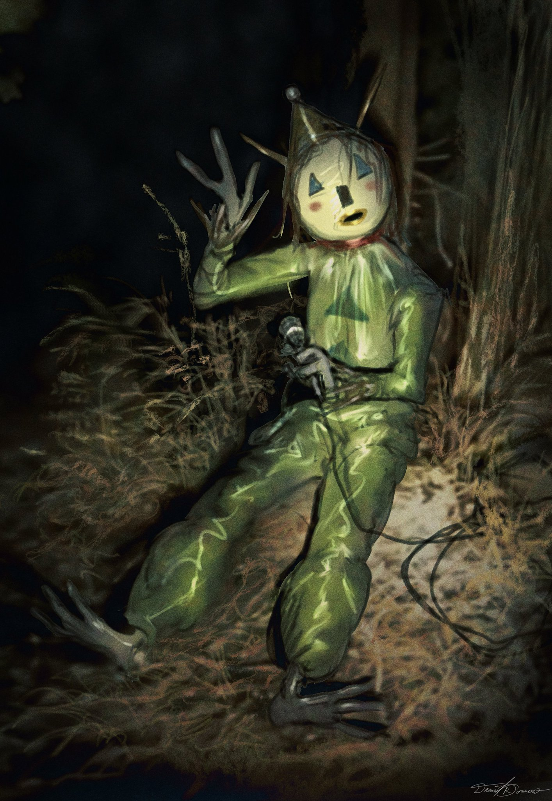
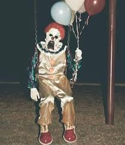

Acerca de
Ésta página está dedicada a recolectar historias de payasos. Es un espacio fascinante para los amantes del terror. Aquí, los usuarios pueden compartir relatos escalofriantes, desde encuentros inquietantes hasta leyendas urbanas sobre payasos siniestros, alimentando así la fascinación y el miedo que estos personajes provocan en la cultura popular.
Leyendas
Pennywise, conocido como "It", es un aterrador payaso que aparece en la novela de Stephen King. Se alimenta del miedo y se manifiesta cada 27 años en Derry, Maine, donde acecha y secuestra a niños, convirtiéndose en una figura emblemática del horror en la cultura popular.
Historias
Pogo

John Wayne Gacy, conocido como Pogo el Payaso, fue un infame asesino en serie que operó en los años 70 en Estados Unidos. Se disfrazaba de payaso para entretener a niños, mientras que en secreto secuestró, abusó y asesinó a más de 30 jóvenes.
Conocer másSandown
El payaso de Sandown es una entidad misteriosa que fue avistada por dos niños en la Isla de Wight en mayo de 1973. Este extraño ser, que se asemejaba a un payaso, ha generado diversas teorías y relatos sobre su naturaleza y el impacto de su encuentro en los niños.
Conocer másWasco
El payaso de Wasco es una figura que se hizo famosa en 2014, cuando una imagen de un payaso con un aspecto inquietante fue compartida en redes sociales. Este payaso, que se hizo conocido como "Wasco Clown", fue visto en varias localidades de Wasco, California, y se convirtió en un fenómeno viral.
Conocer más